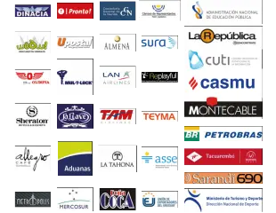

Community News
The International Labor Organization (ILO) launched a global communications campaign called "Towards Social Justice", aimed at intensifying efforts to address inequalities in the world of work. High levels of inequality, aggravated by current crises, have a high human and economic cost and threaten the already slow progress towards the UN Sustainable Development Goals (SDGs). ILO data show that 4 billion people lack social protection, one of the best ways out of inequality; no less than 453 million people who would like to work cannot find a job; and 214 million workers live on less than $1.90 a day.
Nicolás Butin, head of the Partners Department, together with the General Manager, Luis Bajac, attended the 100-year anniversary of the Commercial and Industrial Center of Colonia Switzerland. An entrepreneur fair was held in the Plaza de Los Fundadores in front of the Shopping Center headquarters, and musical shows and typical Swiss dances were also held. The event included a space to recognize the oldest businesses in the city and its area, some dating back more than 100 years. The CCSUY presented an institutional gift as well as words of celebration of this institutional milestone.
Weather
Temperature: 40 ºF
Windspeed: 35 MPH
Windchill: ºF
Spotlights
The Commercial and Industrial Center of Salto organized a “Meeting with Entrepreneurs” activity that included the participation of the president of the CCSUy and representatives of the Center for Development Studies. Julio Lestido presented his dissertation on "The value of the entrepreneur in the country's economy" seeking to exchange on the role of the entrepreneur and its importance for the development of Uruguay. For their part, Economists Agustín Iturralde and Hernán Bonilla from the CED presented "Uruguayan Economy, a look at the coast."
From October 2 to 4, the CCSUy, represented by its president, Julio Lestido, and by Lic. Facundo Bentancor, representative of the International Business Department, participates in the Annual Meeting of ICC Americas, which will take place in Buenos Aires, Argentina. The agenda includes dialogues on the future of international trade, anti-corruption actions, economics and geopolitics, as well as exchanges with regional leaders.